Field Report 015 · Sensors & Data
Meshtastic
Radio
Communications
Boulder Gardens uses Meshtastic to connect people, vehicles, remote sensors, and fixed relay stations across 640 acres of rugged desert terrain. Five fixed stations and four mobile GPS-equipped radios form the core of the network.

Boulder Gardens uses Meshtastic as the long-range radio layer of its Fieldstation communications and monitoring system.
The sanctuary covers approximately 640 acres—about one square mile—of rugged Mojave Desert terrain. Its guiding principle is simple: run cable where practical, use existing Wi-Fi where appropriate, and use Meshtastic where distance, terrain, mobility, or missing infrastructure makes radio useful.
The mesh currently includes five fixed stations and four mobile GPS-equipped radios. The fixed stations span more than 5,100 feet of rocky terrain. Three handheld radios travel with people, while a vehicle-mounted node extends communication beyond the fixed network.
A Meshtastic radio connected to the Boulder Gardens Linux Fieldstation computer allows mesh information to appear in Home Assistant alongside Ethernet and Wi-Fi sensors. Beyond text messaging, the network can carry GPS positions, water levels, temperature readings, soil conditions, equipment status, gate activity, and other information from remote parts of the sanctuary.
Approximately eight independently operated Meshtastic nodes have also been observed in the surrounding Morongo Basin, creating the possibility of future communication with other remote sites and communities.
Meshtastic complements amateur radio rather than replacing it. Ham radio remains valuable for voice and emergency communication, while Meshtastic provides low-power digital messaging, location data, telemetry, and support for unattended solar-powered nodes.
The goal is not to make Boulder Gardens more wireless. It is to use only as much radio as necessary to understand what is happening across the landscape.
Photographic Record
The work, seen in place
Selected photographs from the private FieldStation source record.
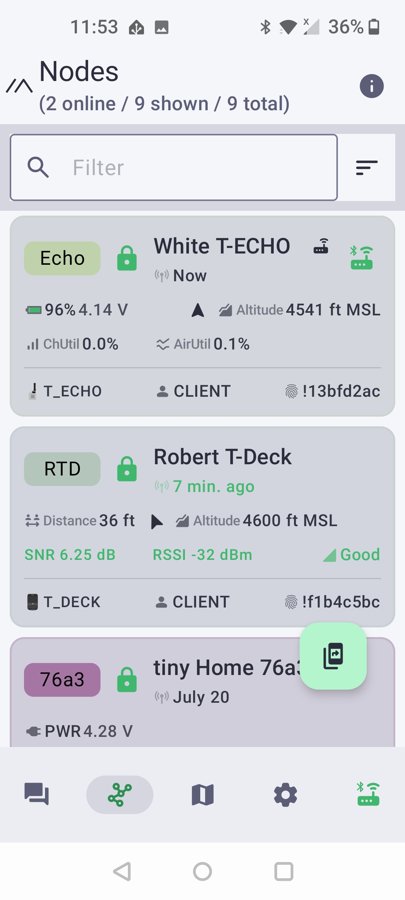
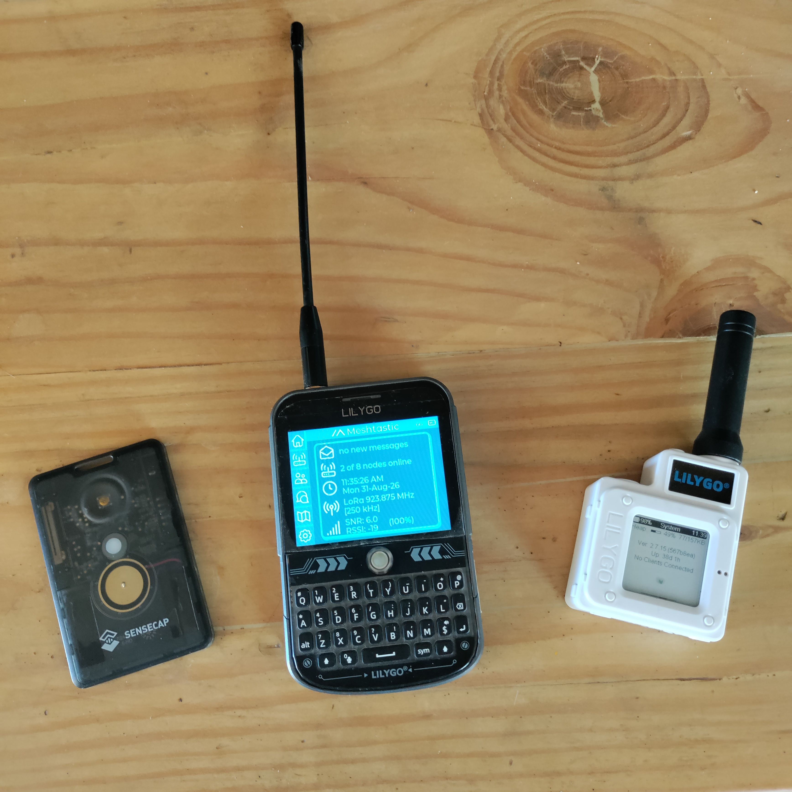
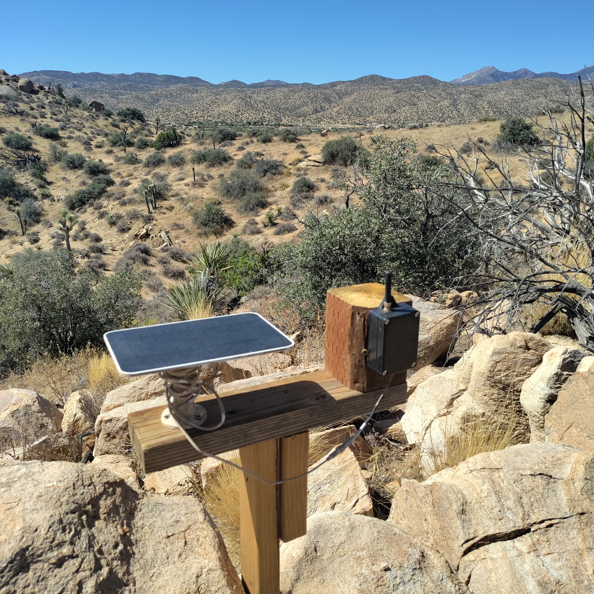
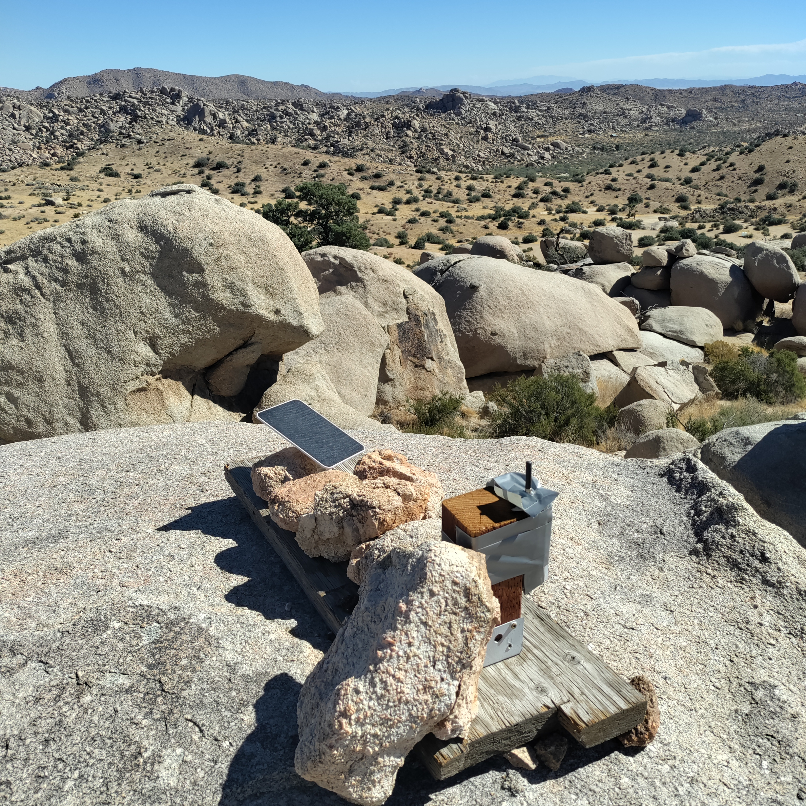
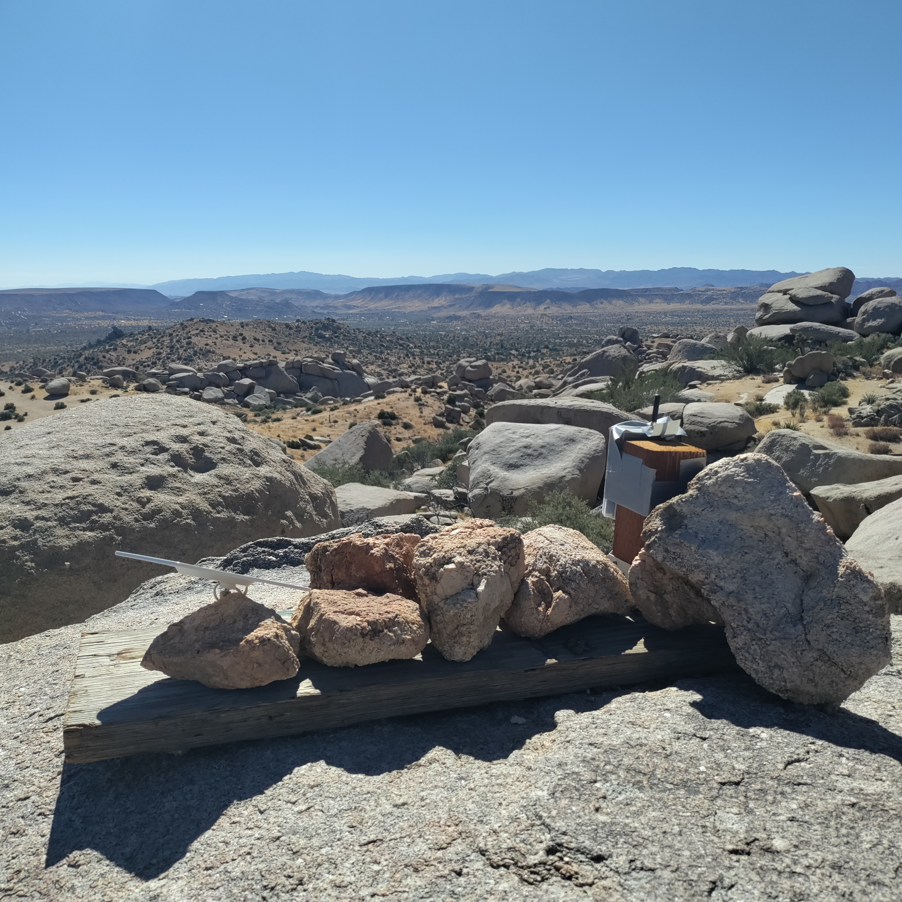
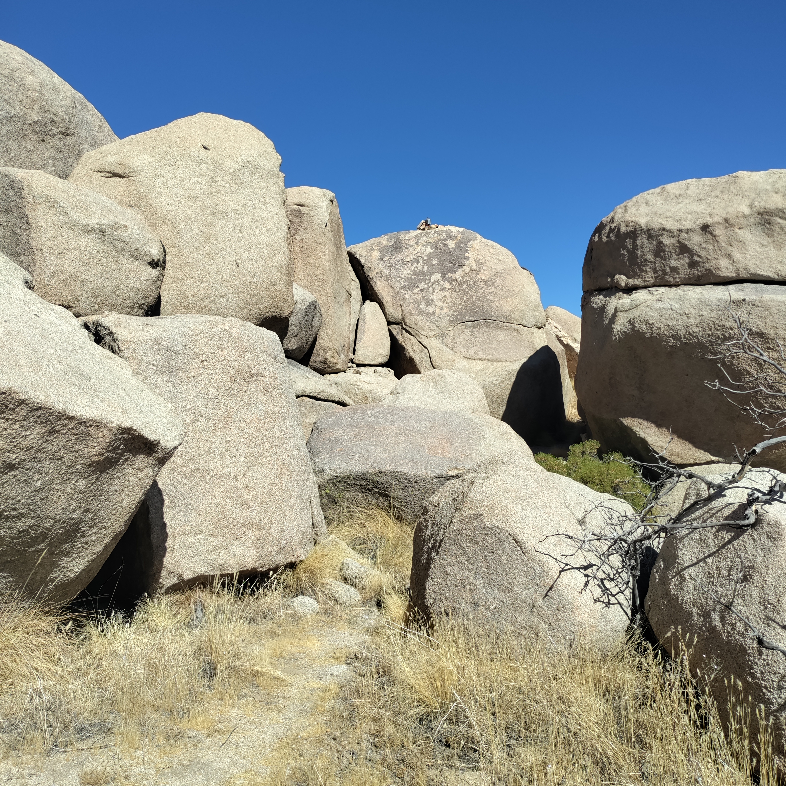
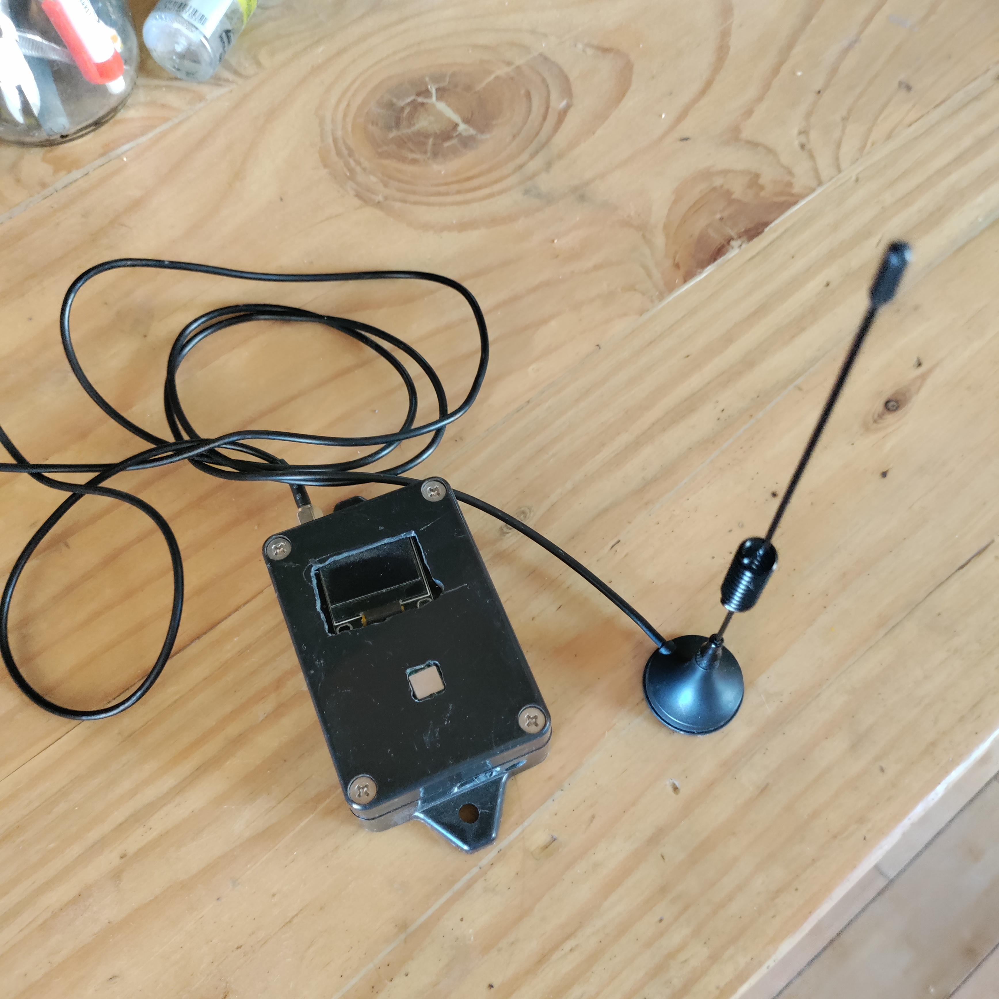
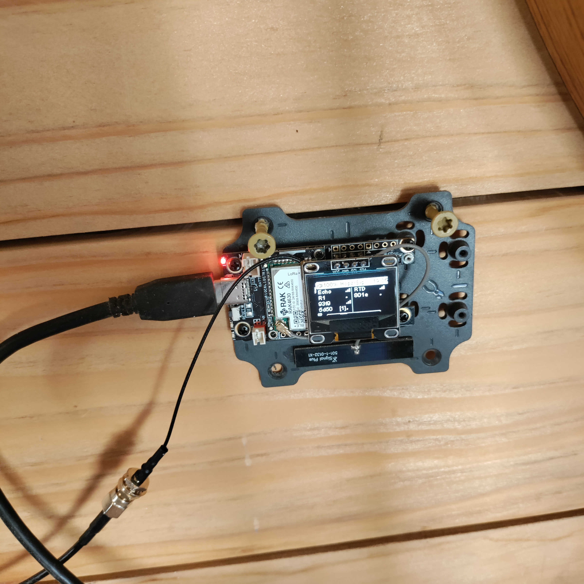
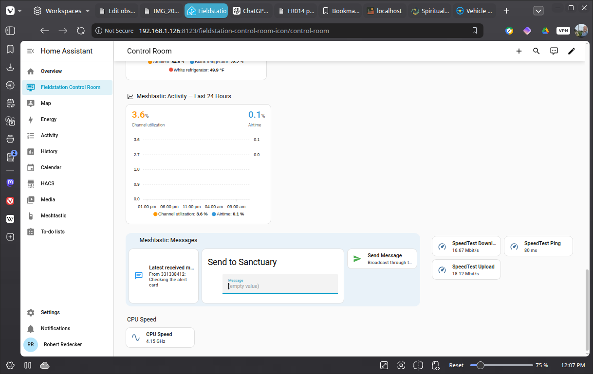
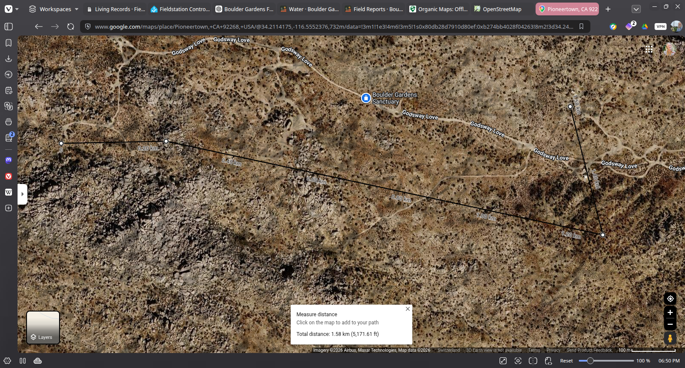
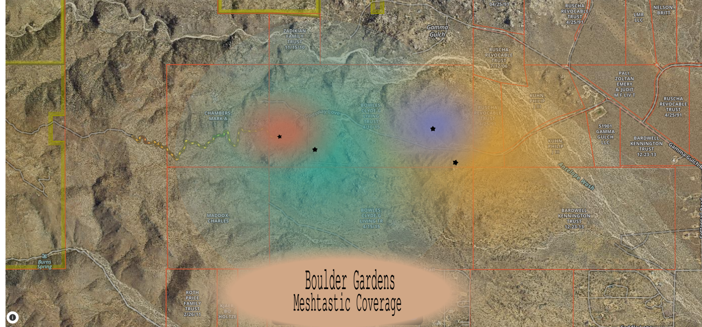
System Thread
Related Fieldstation records
Public synopsis derived from Boulder Gardens Fieldstation Workbook source record FR015. Detailed equipment records, calculations, unresolved questions, and corrections remain in the workbook.